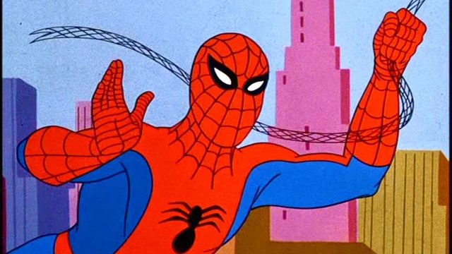

Introduction
My name is Chasen Scearce, and I am a junior at the University of South Carolina Aiken studying Computer Science. I currently work at Savannah River Nuclear Solutions (SRNS) as an OT apprentice, where I am gaining hands-on experience with coding projects. Outside of school, I am a huge LEGO and comic book fan, and I enjoy collecting and building LEGO sets and reading comics.

Portfolio
-
3D Modeled Crane Hook
Created a 3D model of a crane hook for an engineering project. This project involved using 3D modeling software to design and develop the crane hook while applying engineering concepts and attention to detail.
-
SRNS User Guide Button
Coded an interactive button for a user guide during my apprenticeship at Savannah River Nuclear Solutions (SRNS). This project involved using HTML and basic programming skills to improve the functionality and usability of the guide.
-
Excel Data Visualization Project
Created an Excel spreadsheet to organize information and developed charts to make the data easier to understand. This project involved data organization, spreadsheet skills, and creating visual representations of information.
-
CSCI225 Website
This website is being developed using HTML5. Technical skills include HTML, hyperlinks, images, lists, and tables. Web development is an important skill that I am developing through this course.
Schedule
| Day | Course | Time |
|---|---|---|
| Monday | CSCI225 | 12:00 PM - 1:15 PM |
| Tuesday | CSCI340 | 4:30 PM - 5:45 PM |
| Wednesday | CSCI225 | 12:00 PM - 1:15 PM |
| Thursday | CSCI340 | 4:30 PM - 5:45 PM |